原題: Root: A Game of Woodland Might and Right — Learning to Play／会話調の解説と図解例を中心とした入門ガイド。厳密なルール文言は基本ルール（法典編）を参照。本書は基本ゲームの4派閥（猫野侯国・鷲巣王朝・森林連合・放浪部族）を扱う。
森の中で、ルートは多くのものを意味する――命を支える根、力強い者を表す根、そして正当性を示す根。今、あなたはこの森を統べる4つの大きな勢力のうちの1つを率いることになる。雄々しく演じよう。あなたの勢力が森を治める権利を持つ理由を、心から信じよ。
あなたは勝利点を獲得し、支配カードを発動することで勝利を目指す。ゲーム中、ボード上のさまざまな出来事や、プレイ中に行う多くのアクションによって勝利点を獲得できる。プレイ中、点数記録器であなたの得点トラックを進めて、勝利点を記録すること。
1人のプレイヤーが先に30点の勝利点に到達するか、あるいは支配カードを発動して勝利条件を満たすと、そのプレイヤーがゲームに勝利する（詳細は支配カードを参照）。
ゲームを通じて、あなたは建物を建設し、トークンを配置し、自分の勢力を森の各地へ広げていく。それぞれの派閥は固有の方法でこれを行う。
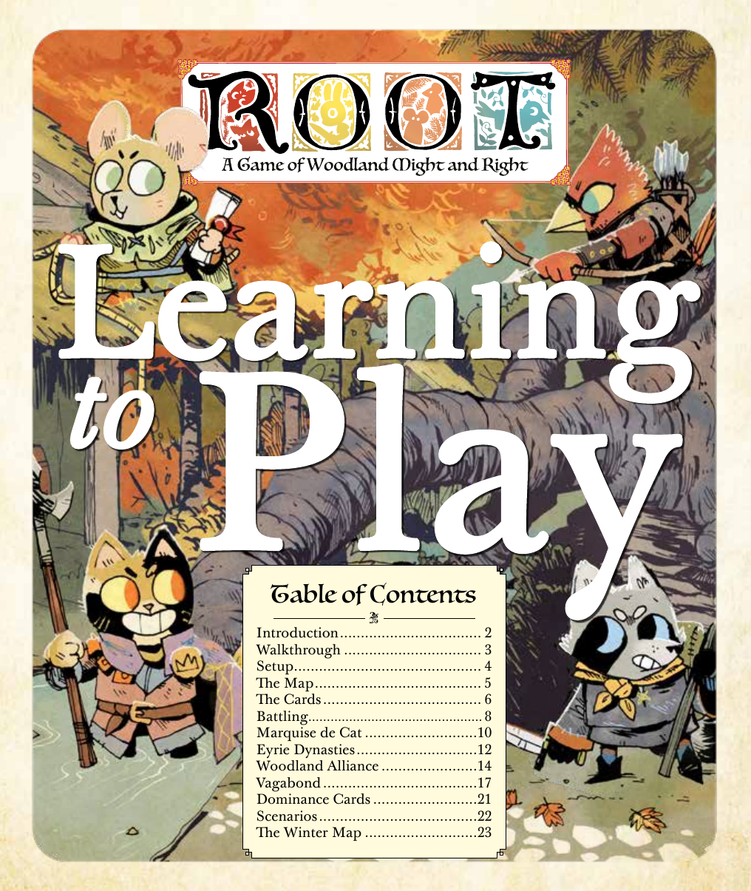
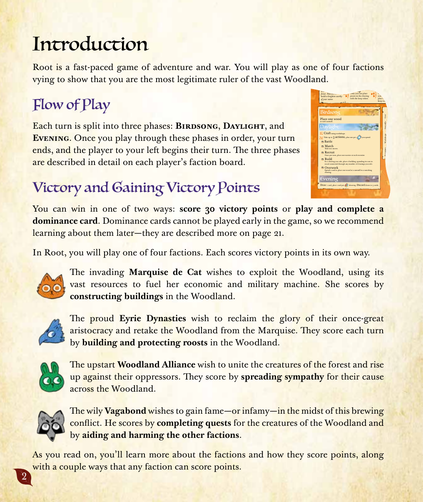
もしあなたがすでにプレイの仕方を学んでいて、いざルールを参照したいだけなら、この入門ルールブックの「ベースとなるルール」のページだけ読んでも構わない。
この後の数ページのルールに従い、各プレイヤーが派閥ボードを1枚選んでから、地図上にコマを配置する。準備が終わったら、その派閥のページを開き、解説に従ってプレイを始める。
猫野侯国のプレイヤーに本のブックレットを手渡し、以下に説明する各フェイズに沿ってプレイしてもらう。最初のターンは時間がかかるかもしれないが構わない――進めながら質問に答えればよい。各プレイヤーのターンが終わるごとに、ブックレットを次のプレイヤーへ手渡す。この手順を、各派閥の進め方が分かるまで続ける。
このアプローチでは、誰かが最初の質問に答えられないことがある（その質問が混乱を招くものであるためだ）が問題ない。それぞれのプレイヤーがこの方法でルートを学ぶにつれ、ゲームのスピードは上がっていく。最初のゲームの後は、参照すべきルールがあるときだけ、各プレイヤーが自分の派閥のページに戻ればよい。
もし他のプレイヤーと違い、ルートを以前にプレイしたことがあるプレイヤーがいれば、最初の数ターンを率先して進めてもらい、他のプレイヤーが操作の流れを掴む手助けをしてもらうとよい。
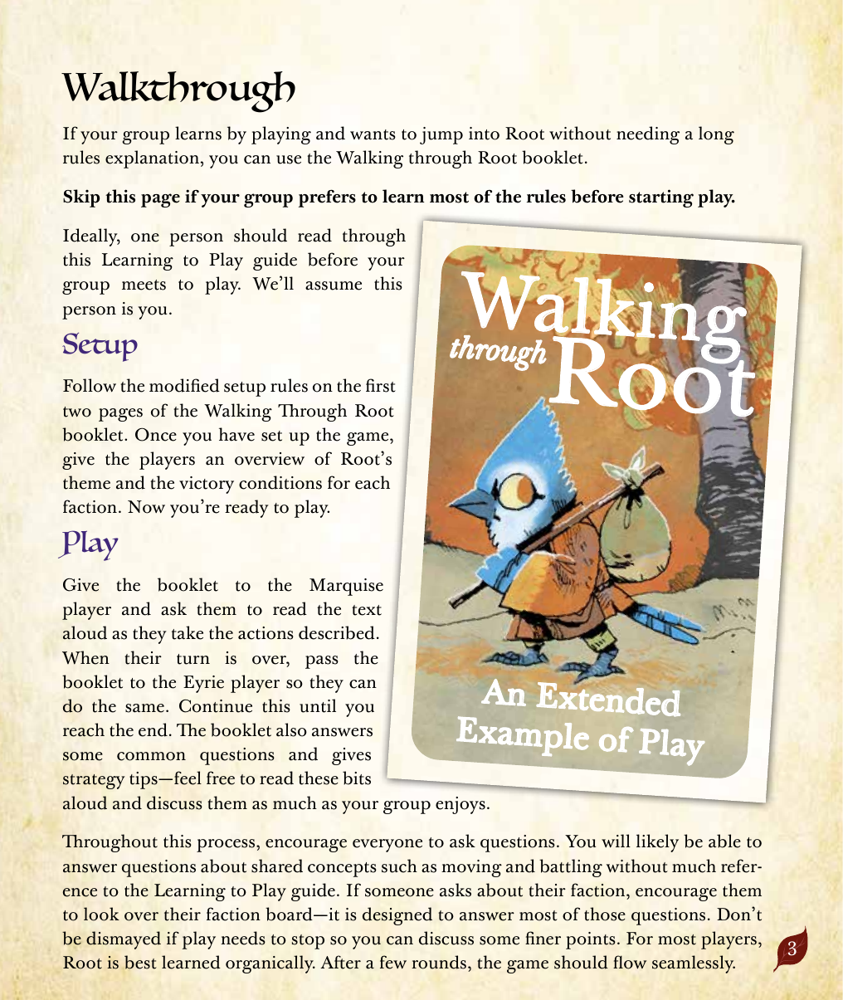
初めてプレイするときは、4人未満であれば放浪部族を除いて準備するとよい。2人または3人でプレイする場合は、以下のセットアップ手順に従う。準備の手順は次のとおり。
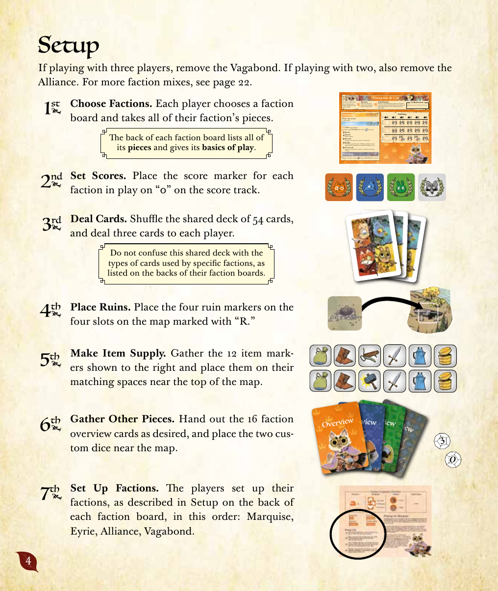
ほとんどのアクションは地図上の開拓地に関わるもので、開拓地は12個あり、道でつながっている。
カードをプレイして、ある開拓地から隣接する開拓地へ駒を移動させることができる。隣接する開拓地とは、道で直接結ばれている開拓地のことである。あなたの兵士・建物がいくつあるかによって、その開拓地を支配しているかどうかが決まる。
ある開拓地で他のどのプレイヤーよりも兵士と建物の合計数が多ければ、あなたがその開拓地を支配する。地図上に置かれた兵士・建物が他のプレイヤーより1人でも多ければ、あなたの支配となる。1つの開拓地を複数のプレイヤーが同時に支配することはできない。
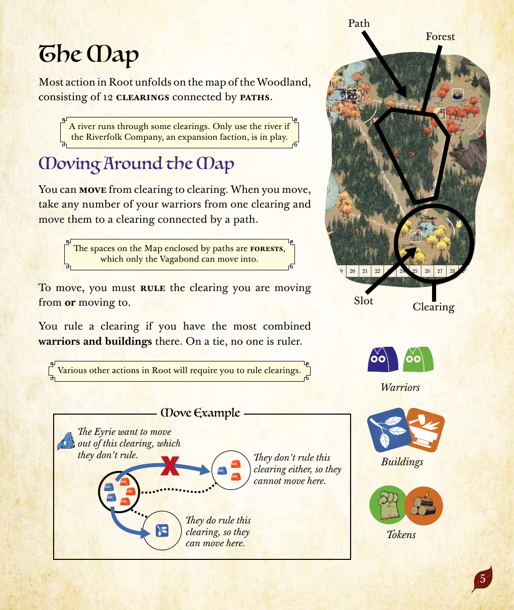
各開拓地は最大3つの建物枠を持ち、開拓地ごとに配置できる建物・トークンの数が決まっている。
狐・兎・鼠の絵柄に開いた穴は、建物枠を表している。放浪部族が探索できる遺跡を除いて、それらの空間は最初は空である。
各開拓地はその色（狐・兎・鼠のいずれか）によって示されるスートを持つ。とはいえ、見栄えの良い厚紙駒であっても、開拓地のスートはその縁の色によって判別できる。
各開拓地のスートは、その縁の色によって示される。手札のカードのスートも同様の色合いで示されている。多くの場合、あなたはカードのスートと一致する開拓地でアクションを行わなければならない。
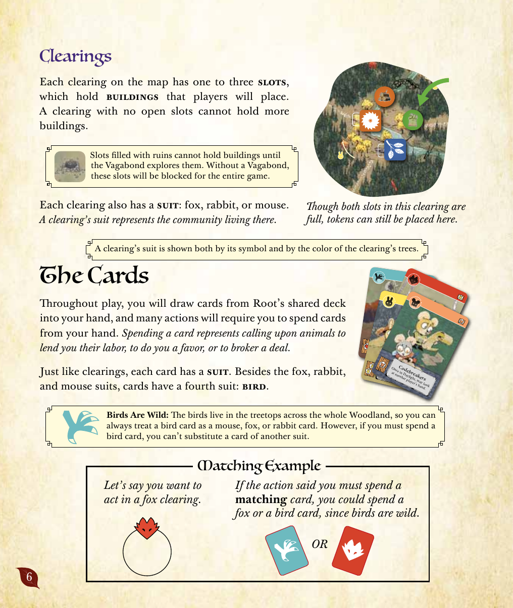
ゲームを通じて、あなたは共有デッキからカードを引き、手札に持つ。多くのアクションはカードを使用して行う。あなたのターン中、空いた時間にいつでもカードを使ってよい。
カードのスートと一致する開拓地でクラフトしたり、カードを支払って自分の手札から取り除いたりできる。さらに、基本かつ多用される4種のスート（鳥・狐・兎・鼠）のほかに、すべてのカードには鳥のスートも持つものがある。
カードをクラフトするには、自分の手札から1枚を使い、それと一致するクラフトアイコンを持つクラフト駒1つを差し向ける。各派閥は固有のクラフト駒を持つ。
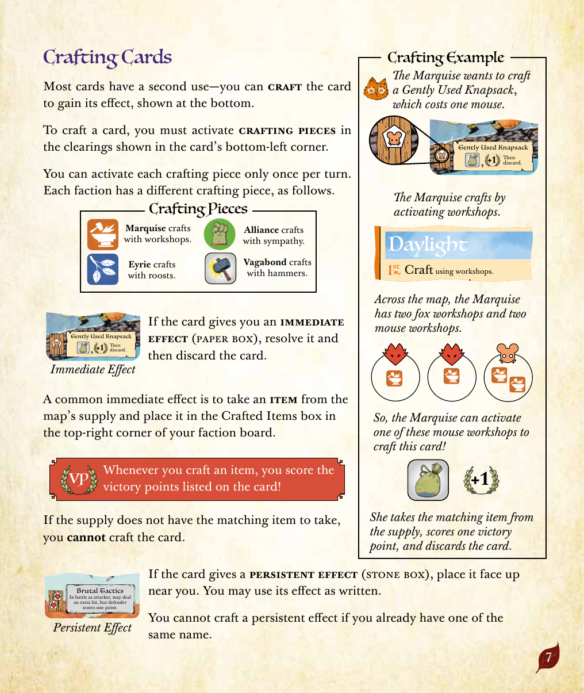
カードをプレイして、自分の駒のある開拓地で戦闘を開始できる。攻撃側として、その開拓地で防御側となる敵を選ぶ。
地図上の各開拓地には2つのスロットがある。開拓地は最大3つの建物を持てるが、最初は空である。あなたの兵士・建物の合計数が他のすべてのプレイヤーより多ければ、その開拓地を支配する。
戦闘ダイス2個（攻撃側用・防御側用）を振る。それぞれが示す数字のうち、敵の防御力（兵士の数によって決まる）と一致する分のヒットを攻撃側・防御側それぞれに与える。最初に攻撃側がロールの結果に基づくヒットを受ける。
ヒットを受けた側は、まず自分の兵士を除去する。すべての兵士が除去されてもヒットが残っている場合は、建物・トークンを除去する。防御側は、自分の供給庫に建物を返して得る報酬として、除去された建物1つにつき勝利点を1点得る。
ある種のカード効果やアクションは「追加ヒット」を与える。これは戦闘の開拓地にいる戦闘人数（兵士の数）に関係なく与えられるヒットである。追加ヒットは、その戦闘で発生した他のすべてのヒットを処理した後に、独立して処理する。
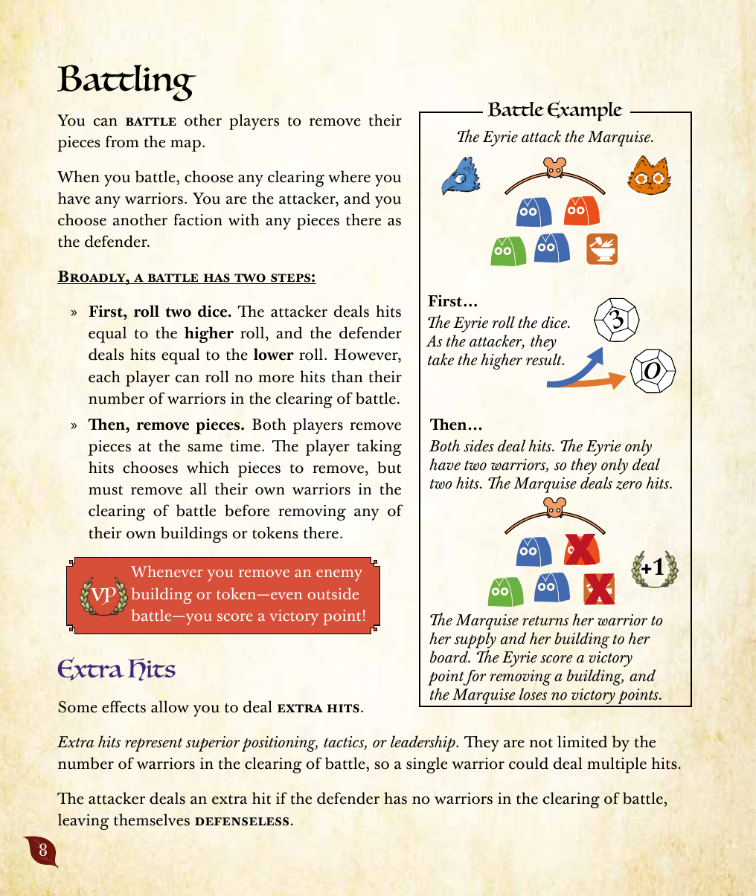
戦闘で、ダイスをロールする前に、防御側はその戦闘の開拓地のスートと一致する奇襲カードを1枚プレイしてよい――奇襲カードがそのスート、または鳥でなければならない。これは攻撃側の最大の戦力（最も多くの兵士を持つプレイヤー）に即座にヒットを与える。
追加ヒットを与えられた攻撃側は、自分の兵士の数に等しい数まで、相手の防御側の戦闘人数を選んで除去できる。
もし奇襲カードによって攻撃側の兵士がすべて除去されたなら、戦闘はそこで即座に終了する。
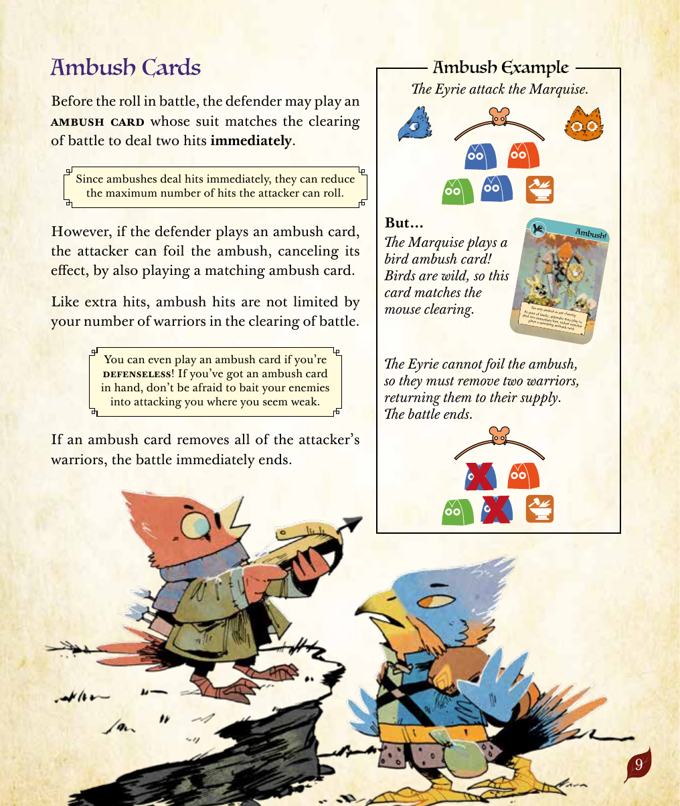
猫野侯国は、産業界の重鎮であり、独自の建物――製材所・徴募所・工房――を地図全体に建設して支配を広げる。各ターンの終わりに、その木材を消費して新しい建物を建設できる。
木材は、製材所が支配する開拓地でとれる森の木材を表す資源である。森を伐採するたびに、製材所からその開拓地にある木材トークンを1個置く。建設の際に支払う木材は、建設する開拓地まで、製材所が支配する開拓地から木材トークンを移動させてくる必要はなく、地図上のどこにある木材でも使ってよい。
木材トークンを地図に置く。
まず、手札のカードを使って何度でも木材トークンを使い建物を建設する。それから、以下のアクションを行ってよい。
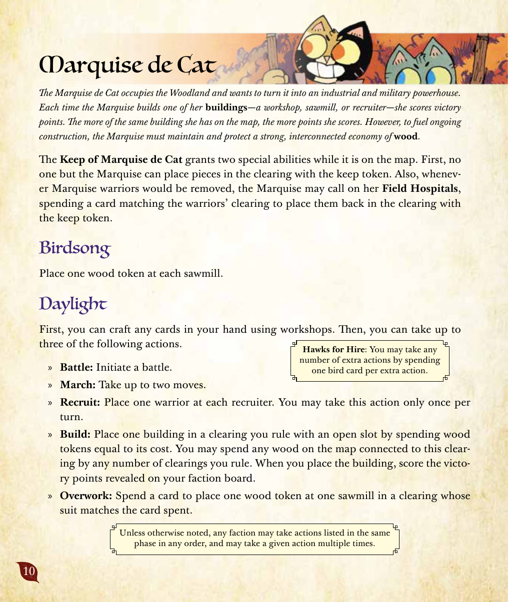
まず、猫野侯国は徴募を行う：兵士を、止まり木のある各開拓地に置く（猫野侯国の場合は徴募所のある開拓地）。
次に、猫野侯国は建設を行う：手札の兎カードを使い、自分が支配する兎の開拓地のスロットに製材所を建てる。建設した製材所と地図上の製材所の総数に応じて勝利点を得る。それから、その開拓地にすでにある木材トークンに加えて、新しい木材トークンを置く。
最後に、猫野侯国は2回移動する：兵士を2体、隣接する開拓地から、まだ支配していない兎の開拓地へ移動させる。これによりその開拓地の支配権を得る。
手持ちのカードを1枚引く。手札が多すぎる場合は、他のプレイヤーと同様、手札を5枚まで捨てる。
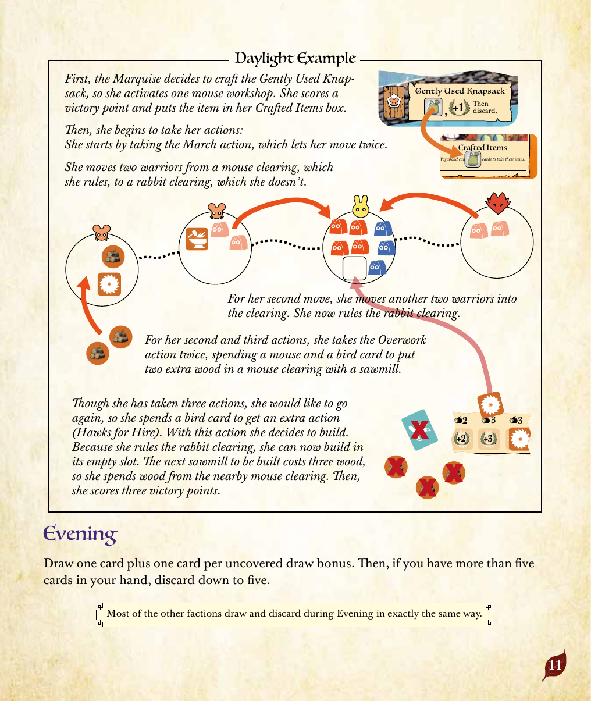
鷲巣王朝は、止まり木と支配を広げることに執着する貴族の鳥たちである。彼らの行動は厳格な勅令によって縛られており、毎ターン同じ種類のアクションを繰り返さなければならない。これを破れば、自らの王朝は混乱に陥る。
止まり木のある各開拓地につき、カードを1枚引く。
まず、カードを1枚、勅令の列――移動・徴募・建設・戦闘のいずれか1列――に追加する。それから、勅令に記載された各カードについて、列に記載された順序でアクションを行う。各アクションでは、そのカードに一致する開拓地で行わなければならない。
各勅令アクションは以下のように動作する。
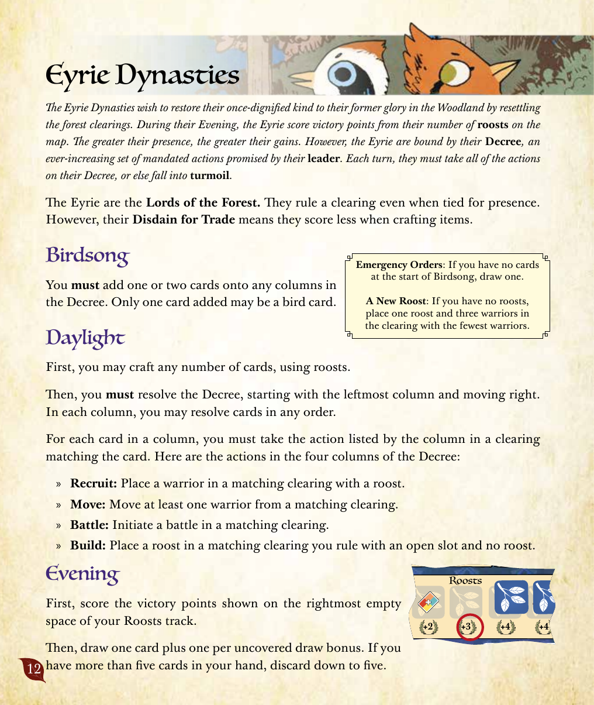
鷲巣の最初のカードは鳥カードで、彼らはこれを建設の列に追加することを選ぶ。
次に、鷲巣は最も古い兵士を移動の列から動かす。これらのカードはウサギの開拓地のカードなので、ウサギの開拓地から移動する。
続いて、鷲巣は戦闘の列のカードに従い戦闘する。彼らはそのカードに一致する開拓地で戦闘を仕掛ける。
最後に、鷲巣王朝は止まり木のある場所に新しい兵士を置き、そこで止まり木を建てたばかりの猫野侯国に挑む――鷲巣はその開拓地で戦闘を仕掛けたが、彼らはその開拓地を獲得できなかった。
いかなる理由であれ勅令を解決できない場合、鷲巣王朝は混乱に陥る。以下の手順に従う。
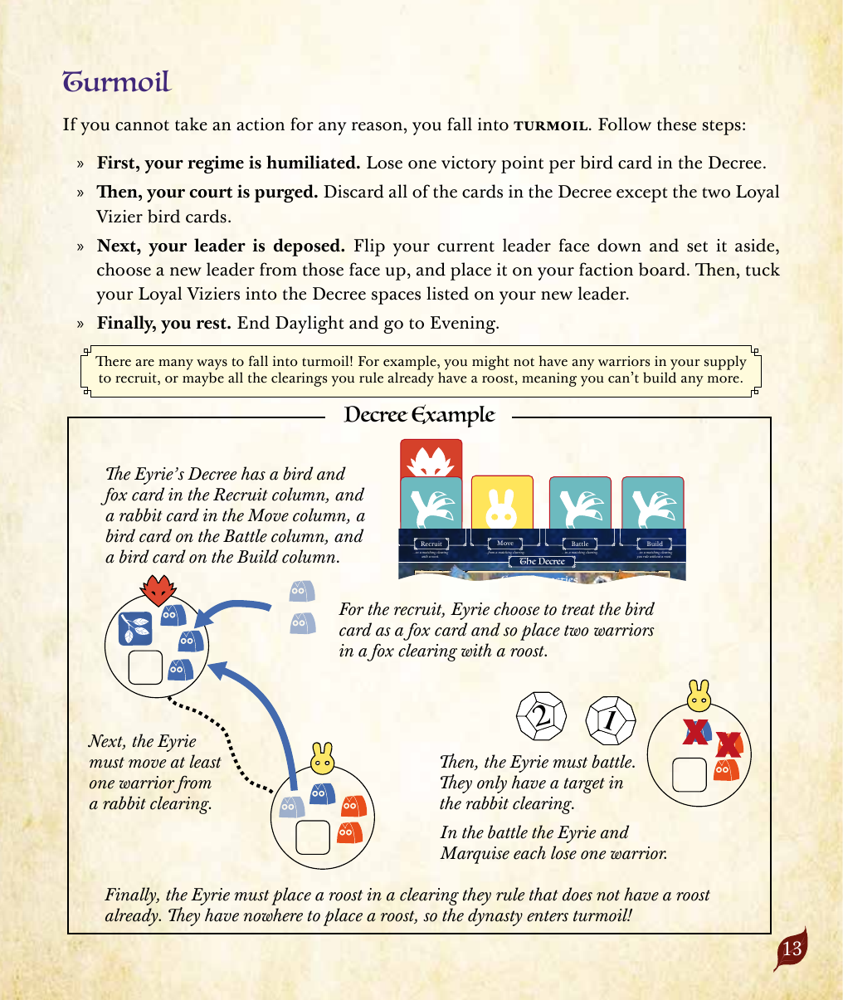
森林連合は森に住む動物たちの、ゲリラ戦を仕掛ける民衆運動である。彼らは表向きの支援者カードを通じて支持を蓄え、自身の支援トークンを地図上に広げていく。十分な支持を得れば、塹壕から反乱を起こし、新たな拠点を築くことができる。
連合は、引いたカードのうち使わなかったものを、表向きで自分の支援者の山に置いてよい。これらのカードは、後にそのカードのスートに一致するものとして消費できる――手札のカードのように使う。
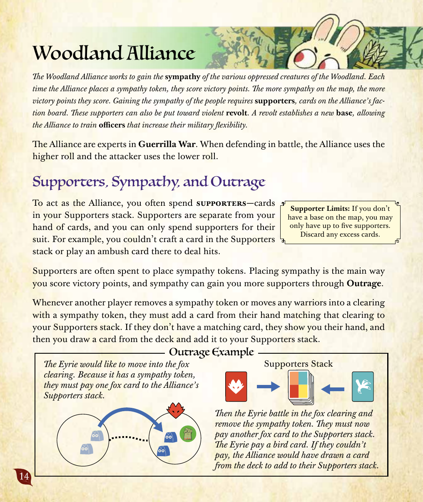
連合のターンの始め、彼らに同情的な開拓地を見つける。
連合は支援拡大を行い、兎の開拓地から、隣接する別の開拓地に新しい支援トークンを置く。この時点で地図上の支援トークンの総数が増えたため、これは連合にとって最初の支援トークンであり、コストが低い。
続いて、連合はもう一度支援拡大を行い、隣接する開拓地に支援トークンをもう1つ置く。今は連合が2つ目の支援トークンを置いたので、得点がさらに増す。
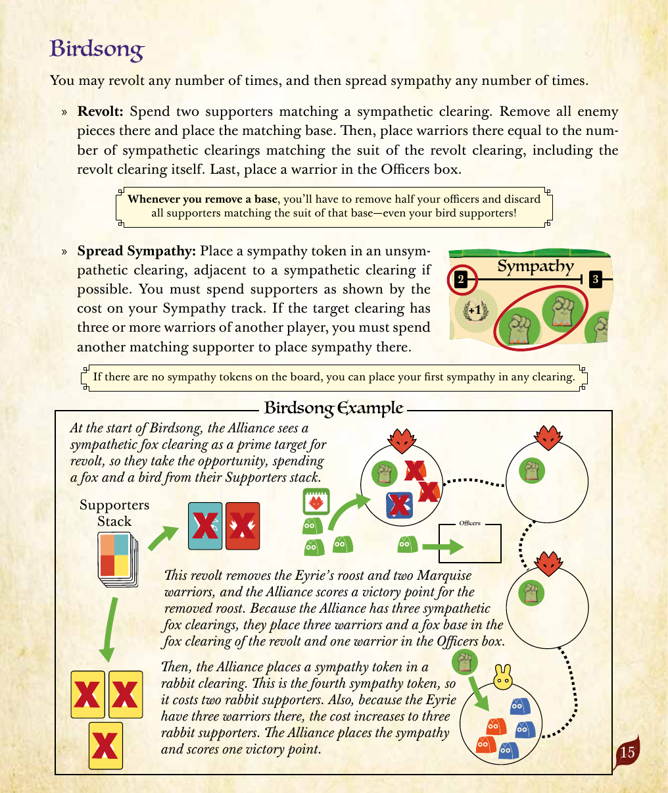
まず、クラフトする。手札のカードを使い、一致するスートを持つ自分の拠点でクラフトしてよい。
士官の数に等しい数だけ、以下の軍事作戦アクションを行ってよい。
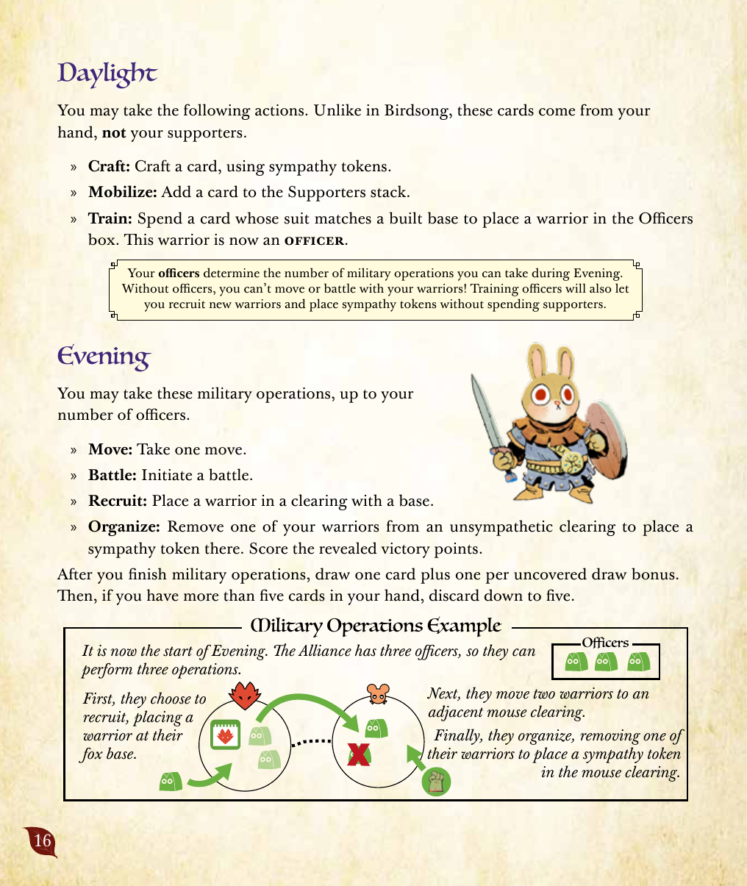
放浪部族は、孤独な旅人であり、自分のパウンだけを操作する。彼らは支配のルールに従わず、樹林にも出入りできる。放浪部族の駒は兵士ではないため、敵の戦闘で奇襲を受けない。
移動・行動を効果的に行うために、あなたはアイテムを管理する。各アイテムは未使用・損傷・使用済みのいずれかの状態で持つ。アイテムを使うには、ザックの「使用可能」面にあるアイテムを使い切り（消費）状態にし、その後さらに使うと損傷状態になる。
未使用・損傷の状態のアイテムは、最大数まで自分のザックに保管できる。使用済みのアイテムを手に入れたら、自分のクラフトしたアイテムのスペースに置く。
カードを1枚引いて、自分の自由移動トラックを1つ進める。これにより、鳥歌フェイズに移動を1回無償で行える。地図を移動する際、隣接する開拓地のどれを選んでもよく、敵の支配を無視できる。
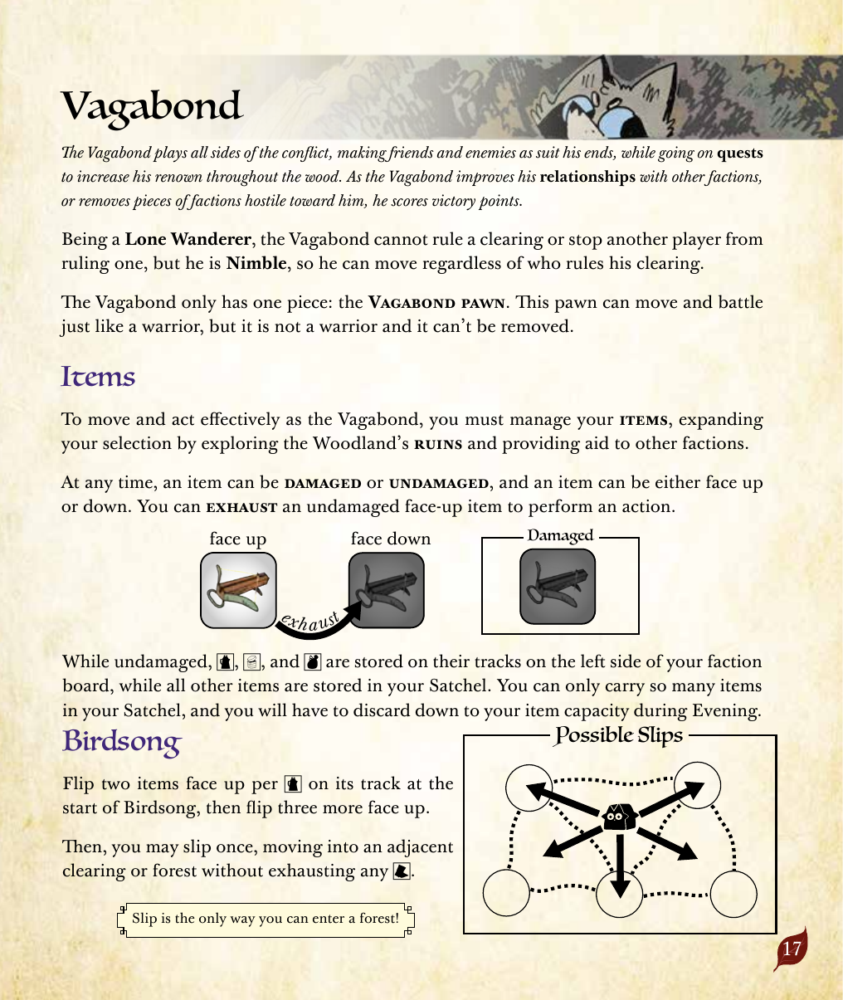
手札のカードを使ってアイテムアクションを行う際、ザックの未使用面のアイテムを使い切る、または損傷したアイテムを修理することができる。
アイテムを地図上に置いたり取得したりした際、コインの山・松明・道具を自分のザックに保持できる。
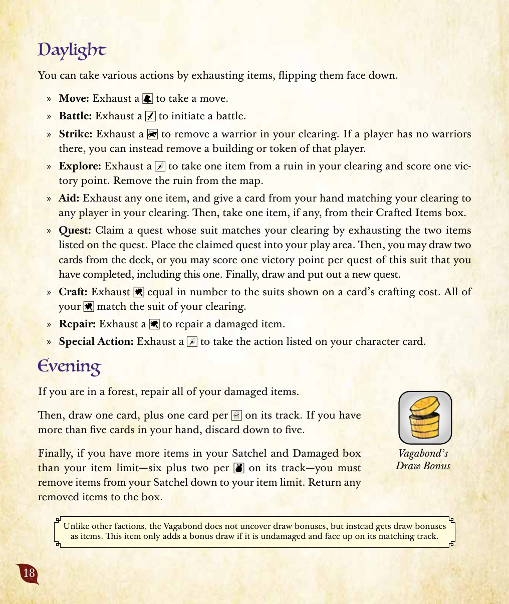
放浪部族の関係チャートは、各派閥との友好度を、敵対から同盟まで段階的に示す。あなたが他の派閥に対して友好的な行動をとるたび、その派閥との関係性トラックを進める。
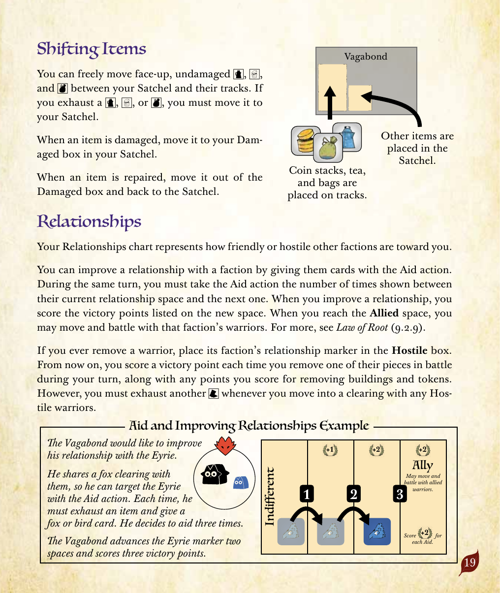
放浪部族は兵士ではないので、他の派閥と異なるルールに従う。
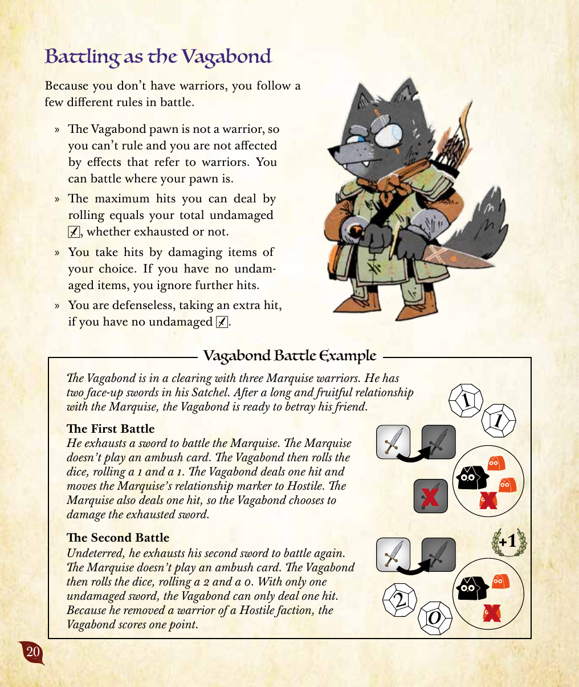
デッキにはスートごとに1枚、計4枚の支配カードが含まれる。手札にあるカードと同様にクラフトできるが、それらをプレイするには、まず勝利点トラックで10点以上に到達していなければならない。
あなたのターン中、勝利点トラックに10以上のスコアがある場合、手持ちの支配カードを1枚活性化できる。活性化すると、それまで通用していたあなたの勝利条件（30点に到達すること）を、その支配カードに記された条件に置き換える。
あなたが活性化した支配カードの条件を満たさない限り、活性化前の通常の得点ルールに従って進行する。活性化したカードは、別の支配カードに置き換えることもできる。
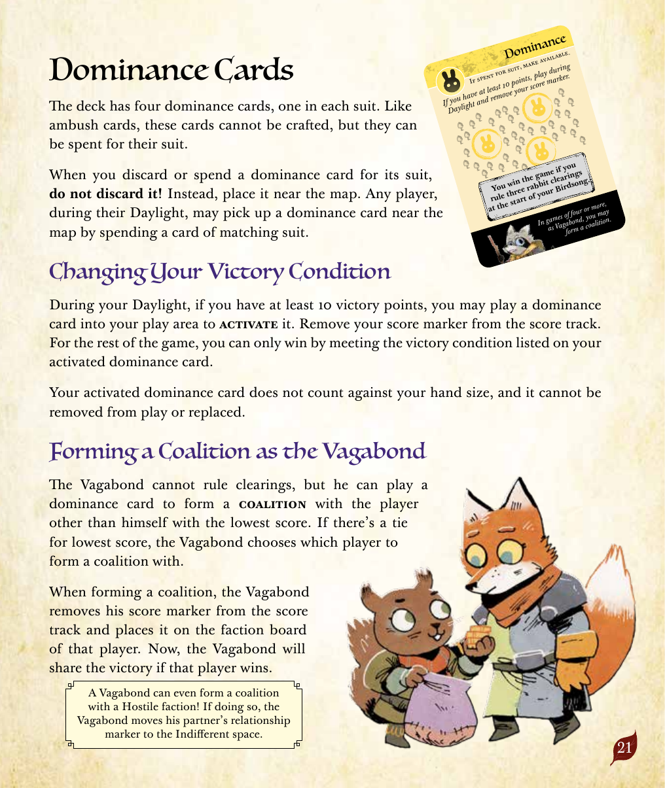
放浪部族は単独で勝利することができない。その代わり、彼らは支配カードを発動して連合を結ぶことができる。連合を結ぶと、放浪部族は自分の得点トラックの駒とスコアボードのコマを取り除き、その時点で最も得点が低い（同点の場合は選んでよい）プレイヤーと連合を組む。
ルートは異なる人数でプレイすることができ、各派閥の組み合わせはプレイ感を大きく変える。基本の組み合わせを学ぶ以外には、他のプレイヤーとも事前に話し合っておくとよい。
鷲巣王朝対猫野侯国は2人用入門ゲームである。プレイヤーは速く拡大力を強める必要がある――鷲巣は粛清を避けるよう注意し、猫野侯国は急速な成長を心掛けるべきである。
猫野侯国と鷲巣王朝の対立は、これら2つの派閥にとって決定的な特徴である。連合は野心的な軍事行動を取り、味方を選ぶことができる。
ここでは、放浪部族は自然な希少さを持ち、両方の軍事勢力と良好な関係を築きながら勝利条件を発展させやすい。
森全体に取り組みを広げ、外交手段を取りながら、連合は森の警察活動を必要とせず追加の勝利点を狙うこともできる。彼らは戦争を望むなら必要に応じて警戒する。
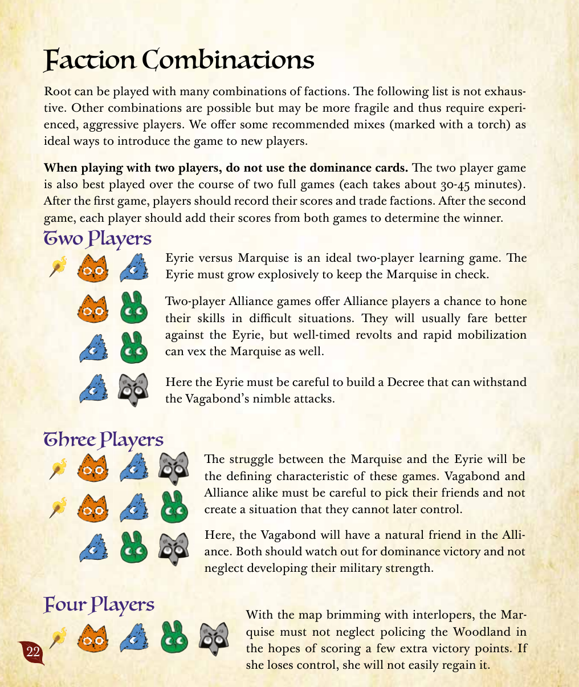
地図の裏面は冬の地図である。このマップは経験豊富なプレイヤー向けにおすすめされている。
冬の地図でプレイする前に、12個のスートマーカーを取り、裏向きにしてシャッフルする。その後、地図上の各開拓地にスートマーカーを1つずつ配り、すべてを裏返してからゲームを始める。下記の図のように、廃墟を所定の位置に配置することにも注意する。
冬の地図では、川が樹林を2つに分断する。
冬の地図では、開拓地のスートがランダムに決まるため、各派閥にとって新しい課題が生まれる。地図のスートの組み合わせがどのように作用し、それぞれの派閥にとってどの組み合わせが有利・不利になりやすいかを理解しておくこと。
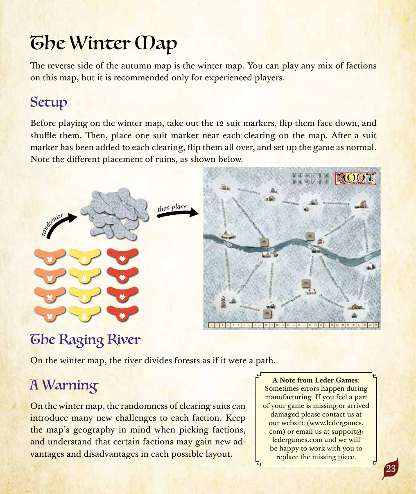
原書の最終ページに掲載されている、地図・派閥ボード上の駒の早見表（ピース・グロッサリー）の内容を以下にまとめる。
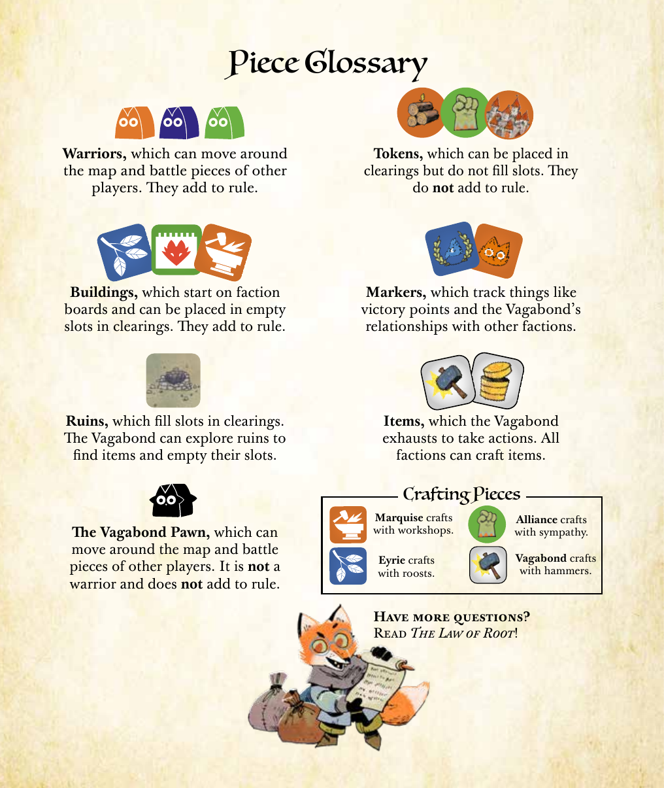